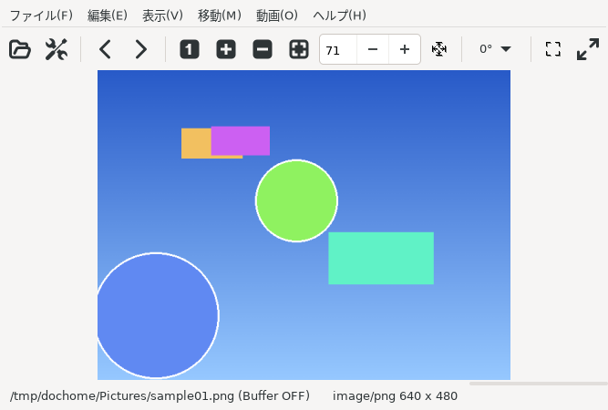
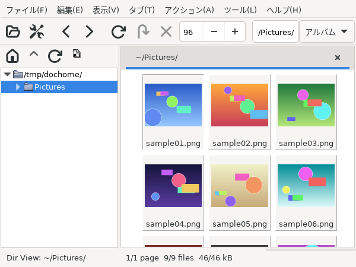
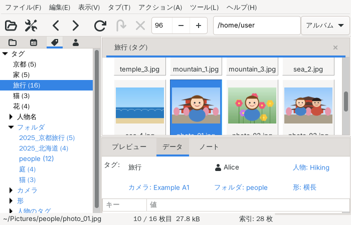
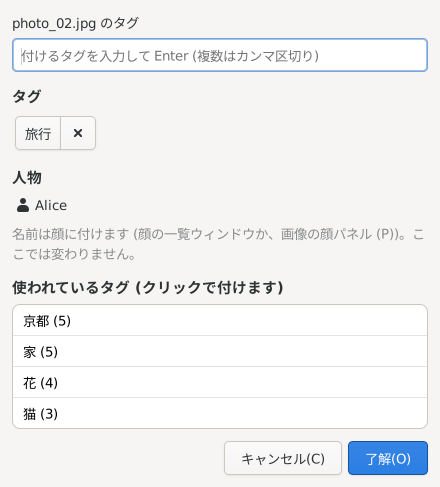
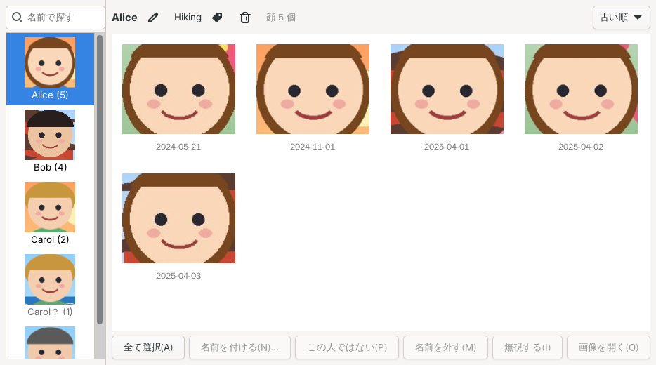
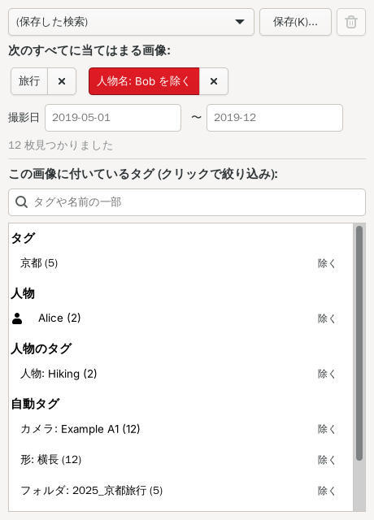
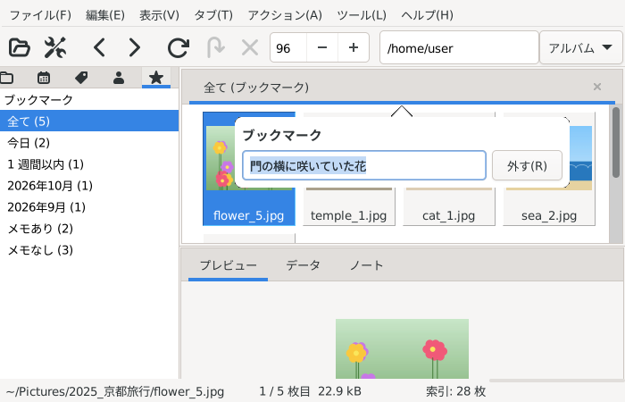

以下の様にコマンドを打つと、画像ファイルを見ることが出来ます。
$ gimv [画像ファイル名...]

イメージウィンドウ (既定の設定)
また、以下の様に "-d" オプションを付けてディレクトリ名を指定すると、サムネイルウィンドウに、ディレクトリの全ての画像ファイルをサムネイルで開きます。
$ gimv -d [ディレクトリ名]

サムネイルウィンドウ (既定の設定)
以下のような感じで画像ファイル名とディレクトリ名を入り乱れて指定すると、画像ファイルはイメージウィンドウで、ディレクトリはサムネイルウィンドウで開きます。
$ gimv -d hoge01.jpg ~/ ~/images images/hoge02.jpg\ /usr/share/pixmaps/ hogehoge.png ......
"-t" オプションを付けて、全てをサムネイルウィンドウで開く事もできます。
その他コマンドラインオプションの詳細は以下のとおりです。
$ gimv -h
Copyright (C) 2001 Takuro Ashie
Usage: gimv [オプション...] [画像ファイル名...]
-d, --directory ディレクトリを読み込む
-R, --recursive ディレクトリを再帰的に取得("-d"と共に使用)
-D, --scan-dot ディレクトリ走査時にドットファイルも読み込む
-e, --ignore-ext 拡張子を無視する
-s, --scale=SCALE イメージビューでの画像拡大率を指定(%)
-b, --buffer=ON/OFF 元の画像をメモリに保持するか否か
-M, --menubar イメージビューにメニューバーを表示
-T, --toolbar イメージビューにツールバーを表示
-I, --imagewin 空のイメージウィンドウを開く
-w, --thumbwin サムネイルウィンドウを開く
-i, --imageview 全ての画像をイメージビューで開く
-t, --thumbview 全ての画像をサムネイルビューで開く
-S, --slideshow 画像をスライドショーで開く
-W, --wait=TIME スライドショーの画像切替え間隔 ("-S"と共に使用) [sec]
-v, --version バージョン情報を表示
-h, --help このメッセージを表示
GUI からディレクトリを開きたい場合は、ディレクトリビューで該当するディレクトリをダブルクリックするか、サムネイルウィンドウのツールバーのディレクトリ入力欄にパスを入力して Enter を押して下さい (画像のあるディレクトリだけが、新しいタブで開きます)。ファイルオープンダイアログでディレクトリを選んで「選択したファイルのサムネイル」を押しても開けます。
[設定 | 索引] で「索引を作るディレクトリ」を指定すると、GImageView の起動中に索引プロセス (gimv-indexer) がその下の画像を調べ、撮影日時とタグのデータベース (~/.local/share/gimageview/index.db) を作ります。索引プロセスは低い優先度で動き、起動中のファイルの追加・移動・削除も取り込みます。進み具合はステータスバーの右端に「索引: …」と表示されます。SQLite を使ってビルドした場合だけの機能です。

タグタブと結果のタブ
索引ができると、サムネイルウィンドウのディレクトリビューの欄に「日付」「タグ」のタブが (顔が使える場合は「人物」も) 増えます。
画像を撮影日で年・月・日に分け、枚数とともに新しい順に表示します。撮影日は、コメントの「日付」に書いた日付 (「2025-04-01」「2025/4/1 10:15」「2025年4月1日 10時15分」など。SNS の画像のように EXIF が消され、ファイル名も日付でない画像に)、なければ EXIF (gexiv2 を使ってビルドした場合は XMP も) の撮影日時、なければファイル名に含まれる日付、それもなければ更新日時です。
手で付けたタグを上に、その下に「人物名」と、自動で付いたタグのグループ (青色: フォルダ、カメラ、形、人物のタグ) を表示します。他のプログラムが付けたキーワードは、同じ名前の手で付けたタグと 1 つにまとめて上の一覧に出します (クリックするとどちらかが付いた画像。改名・統合は手で付けたタグだけで、キーワードは付けたプログラムで直します)。
行の文字をクリックすると、その画像をサムネイルビューの結果のタブに表示します (結果のタブは 1 つで、内容を入れ替えます)。中ボタンのクリックか、右クリックの「新しいタブで開く」で新しいタブに開きます。矢印キーで行を移っただけでは開かず、Enter で開きます。結果のタブはファイル名だけを表示し、フルパスはツールチップとステータスバーに出ます。右クリックの「元のフォルダを開く」で、その画像のあるフォルダを開けます。数万枚の結果でも、見えている付近のサムネイルだけを作ります。
サムネイルの右クリックか [編集 | タグを編集...] で、選んだ画像 (複数可) にタグを付けます。イメージウィンドウでは [編集 | タグを編集...] か画像の右クリック、プレビューでは右クリックの「タグを編集...」で、表示している画像のタグを編集します。上の欄にタグを入力して Enter で付けます (カンマ区切りで複数、「旅行/京都」のように「/」を含めても構いません)。付いているタグは下に並び、× で外せます。一番下の「使われているタグ」はよく使われている順で、入力すると絞り込まれ、クリックで付けます。複数の画像では、一部の画像にだけ付いているタグを「京都 2/5」のように表示し、クリックで全部に付け、× で全部から外します (そのままなら各画像のまま)。何も入力していないときの Enter で決定します。

タグの編集
タグはコメントファイル (~/.gimv/comment) の「X-IMG-Tags:」の行に書かれ、索引を作り直しても失われません。顔に付けた人物の名前 (「person/名前」のタグ) は欄には出さずに「人物」に表示し、タグの編集では変わりません (名前は顔の一覧ウィンドウか顔パネルで付けます)。コメントウィンドウとプレビューの「データ」タブの「タグ:」の行には、その画像のタグが並び、クリックするとそのタグの画像を開きます。
タグタブで手で付けたタグ (または人物のタグ) を選び、F2 か右クリックの「名前を変更...」で名前を変えます。同じ名前のタグがあれば、1 つにまとめるか確認します。コメントファイルの書き換えは裏で行います。Ctrl+C で行の名前をコピーできます。
フォルダ名、カメラ (EXIF)、形 (縦長・横長・正方形)、他のプログラムが付けたキーワードのタグを索引が自動で付けます ([設定 | 索引 | 自動タグ])。キーワードは、画像の中の XMP (dc:subject) と IPTC のキーワード、画像の隣のサイドカーファイル (「画像名.jpg.xmp」(digiKam・darktable など) と「画像名.xmp」(Lightroom など)) から読みます。階層のあるキーワード (「季節|春」) しかない場合は最後の部分を使います。サイドカーファイルを書き換えると、索引はその画像のキーワードを読み直します。キーワードは手で付けたタグと同じ名前なら同じタグとして表示・検索します (タグタブ、データタブ、検索ウィンドウ、「タグを編集」の「使われているタグ」)。gexiv2 (Exiv2) を使ってビルドした場合は、撮影日時・カメラ・キーワードを Exiv2 が読める形式 (JPEG・HEIF・PNG・WebP・TIFF・RAW など) すべてから読みます。gexiv2 なしでは、EXIF は JPEG だけ、XMP は JPEG・PNG・WebP・TIFF だけです。数字だけのフォルダ名や DCIM はタグにしません。タグにしたくないフォルダ名は「タグにしないフォルダ名」(「*」「?」が使えます) に加えるか、タグタブのフォルダの右クリックの「このフォルダ名をタグにしない」で加えます (設定ウィンドウを開いている間は使えません)。自動タグは索引の中にだけあり、コメントファイルには書きません。
索引を作るディレクトリに画像が増えると、デスクトップに通知します (まとめる時間、間隔、通知しないフォルダは [設定 | 索引 | 新しい画像])。ステータスバーの「お知らせ」ボタンには、前回からの新しい画像の枚数や、他のプログラムで移動された画像のコメントを移すかどうかの確認などが出ます。
コメント (タグ) の付いた画像が見つからなくなると、起動ごとのログ (~/.local/share/gimageview/missing-*.log) に記録します。[ツール | 行方不明の画像] の一覧で、コメントを「移動先に付け直す」「別の画像に付け直す...」「コメントを削除」「ログから外す」ことができます。
[設定 | 索引 | 顔] の「顔を認識するフォルダ」(索引を作るディレクトリの中) の画像から、gimv-faces が顔を探し、似た顔をグループにまとめます。索引のあとで、ゆっくり動きます。OpenCV 4.8 以上を使ってビルドした場合だけの機能で、モデルファイル (OpenCV の YuNet と SFace、約 40 MB) を ~/.local/share/gimageview/models に置く必要があります (入手先は設定のページに表示されます)。

顔の一覧ウィンドウ
名前を付けた人 (人物のタグでまとめて表示)、名前の候補 (「名前？」)、名前のないグループ、その他の顔、無視した顔を表示します。クリックでその人の写っている画像を開きます。右クリックの「顔を表示...」で顔の一覧ウィンドウを開きます。
左の欄に人物 (名前のないグループと候補も) が顔と名前で並び、右にその人の顔が並びます。顔を選んで (Ctrl+A で全て) 「名前を付ける」「この人で正しい」「この人ではない」「名前を外す」「無視する」を選びます。ダブルクリックで元の画像を開きます。見出しのボタンで、名前の変更 (同じ名前の人がいれば 1 人にまとめる)、名前のコピー、人物のタグ、人物の削除ができます。並び順は古い順・新しい順・その人らしくない順 (間違って入った顔を探すとき) から選びます。
イメージビューの右クリックの「顔の編集」(P) で、画像の右にその画像の顔が並び、ここでも名前を付けられます。「＋」を押して画像の上をドラッグすると、見つからなかった顔 (小さい顔など) を手で加えられます。顔の右クリックで、その顔をクリップボードにコピーできます。
顔に付けた名前は、画像のコメントファイルにも「person/名前」のタグで書かれます。索引を作り直しても、このタグから名前が顔に戻ります。タグタブの「人物名」のグループはこのタグです。
人に付けるタグ (所属する集まりなど) です。顔の一覧ウィンドウの「人物のタグ...」で付けます。索引の中にだけ保存し、タグタブの「人物のタグ」と人物タブのまとまりに使います。名前を変えると、そのタグの付いた人全員が変わります。

画像の検索ウィンドウ
[ツール | 画像を検索...] で、索引から複数の条件で画像を探します。
下の一覧のタグ (人物の名前、自動タグも) をクリックすると、条件が札になって上に並びます。入力欄に文字を入れると一覧を絞り込み、Enter で先頭のタグを加えます。札の条件は全て満たす (かつ) 画像を探します。札をクリックすると「除く」(赤) に変わり、そのタグの付いた画像を外します。× で札を外します。
「撮影日」で撮影日の範囲を指定します (年だけ、年月だけでも構いません)。
条件を加えると、下の一覧は見つかった画像に付いているタグを種類ごとに件数付きで並べます。クリックでさらに絞り込み、各行の「除く」で外せます。
見つかった画像はサムネイルウィンドウのタブに表示します。
「保存...」で今の条件に名前を付けて保存し、上のドロップダウンから呼び出せます (~/.gimv/searches)。ごみ箱のボタンで削除します。
サムネイルは freedesktop.org の Thumbnail Managing Standard の形式 (~/.cache/thumbnails) で読み書きでき、他のプログラムと共有できます ([設定 | サムネイルキャッシュ])。
JPEG・PNG など GdkPixbuf で読める画像のサムネイルは別スレッドで作るので、作成中も操作できます。JPEG に十分な大きさの縮小画像 (EXIF) があればそれを使います ([設定 | サムネイルキャッシュ] の「サムネイルの作成」)。
サムネイルは EXIF の向き (回転・左右反転) どおりに表示し、その向きでキャッシュに保存します。イメージビューで回転・左右反転して記憶した向きがあれば、その向きで表示します (キャッシュには保存しません)。
イメージビューの右クリックの「画像をクリップボードにコピー」(Shift+Ctrl+C) で、表示している画像を他のプログラムに貼り付けられます。
イメージビューの「左右反転」(X) と回転は画像ごとに記憶し、次に開いたときに戻します ([設定 | イメージウィンドウ | 画像] の「画像ごとに回転・左右反転を覚える」)。
プレビューとコメントウィンドウの「データ」タブには、画像ファイル自体に書かれたコメント (JPEG・PNG・GIF・MAG) を斜体で表示します (表示のみ)。
「データ」タブでは、「キー」を選んで「値」を入れ、Enter か「保存」で登録します (値の書き方に決まりはありません。ただし「日付」に日付として読める値を書くと、索引はそれを撮影日にします)。
「データ」タブの「項目を削除」(一覧では Delete キー) は選んでいる項目を消し、「保存」で確定します。下の「コメントを削除...」は、確認のあと、その画像のデータとノートを消します。タグ (X-IMG-Tags) は残ります。タグの行は表示だけで、タグは「タグを編集...」で編集します。
サムネイルビューとイメージビューの右クリックの「元のフォルダを開く」で、画像のあるフォルダを開きます。
気になった画像に、後から見返すための印を付けられます。索引の対象外のフォルダの画像にも付けられます。ブックマークは ~/.gimv/bookmarks に保存します (索引のデータベースとは別なので、索引を作り直しても消えません)。

ブックマークタブとメモの入力
サムネイルビューで画像を選び (複数可)、[編集 | ブックマーク...] か右クリックの「ブックマーク...」を選びます。イメージウィンドウでは [編集 | ブックマーク...]、プレビューでは右クリックの「ブックマーク...」です。選んだ時点でブックマークが付き、メモの欄が出ます。メモは何も書かずに Esc で閉じてもかまいません (雑に付けておいて、後から書けます)。Enter か欄の外をクリックすると、書いたメモを保存します。すでに付いている画像で選ぶと、メモを直したり「外す」で外したりできます。
標準ではキーは割り当てていません。~/.gimv/keyaccelrc に次のように書くと、次の起動からそのキーで付けられます (Ctrl+K の例。行の先頭に「;」があると無効です)。
(gtk_accel_path "<ThumbWinMainMenu>/Edit/Bookmark..." "<Control>k") (gtk_accel_path "<ImageWinMainMenu>/Edit/Bookmark..." "<Control>k") (gtk_accel_path "<ThumbWinPreviewPop>/Bookmark..." "<Control>k")
ディレクトリビューの並びの「ブックマーク」タブ (星) に、付けた日ごと (今日、昨日、1 週間以内、それより前は月ごと) と、「全て」「メモあり」「メモなし」が件数付きで並びます。行をクリックすると、結果のタブに新しく付けたものから順に開きます (索引のタブと同じく、ファイル名だけを表示)。並べ替えのメニューを選ぶと、その順になります。
ブックマークを付けた画像は、サムネイルのツールチップの先頭に「★ メモ」(メモがなければ「★ ブックマークしました」) を表示します。
GImageView で名前を変えたり移動したりした画像は、ブックマークも一緒に移ります。索引の対象のフォルダでは、ほかのプログラムで移動・名前変更した画像やフォルダにも付いていきます。それ以外で見つからなくなった画像は、タブの「見つからない」に件数だけ表示します。